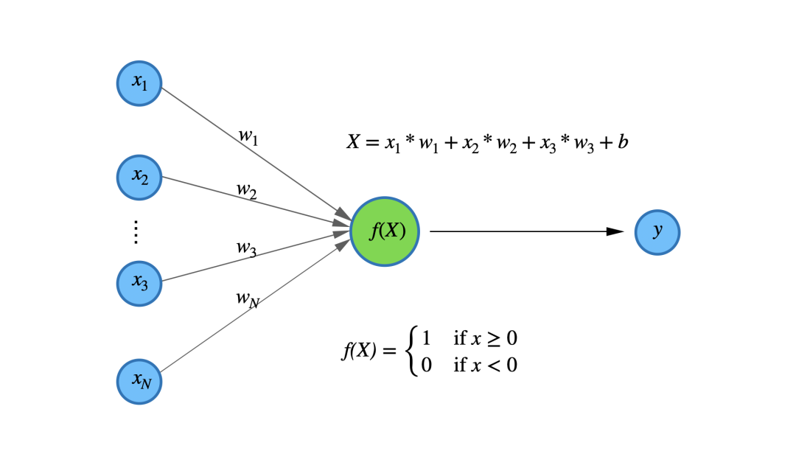
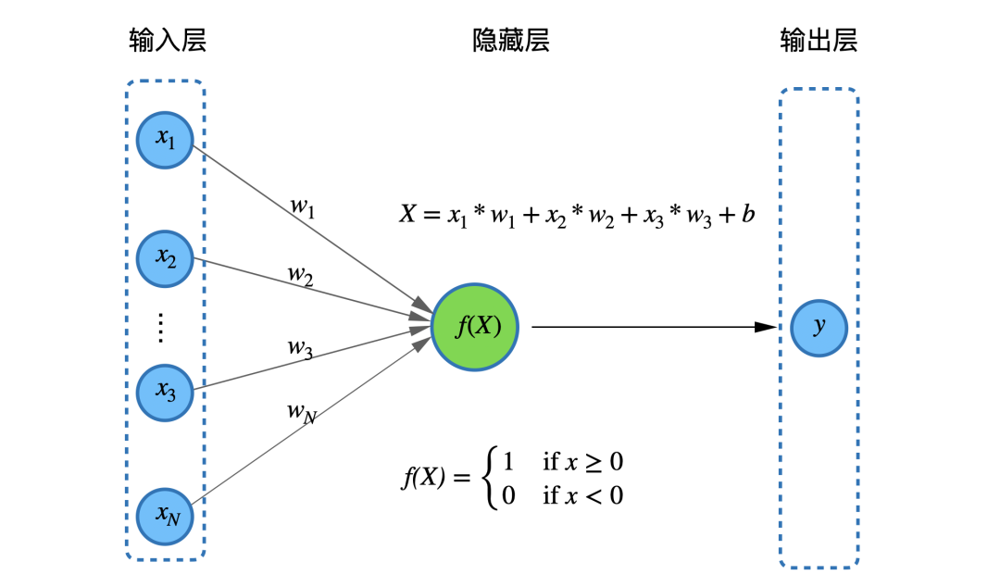
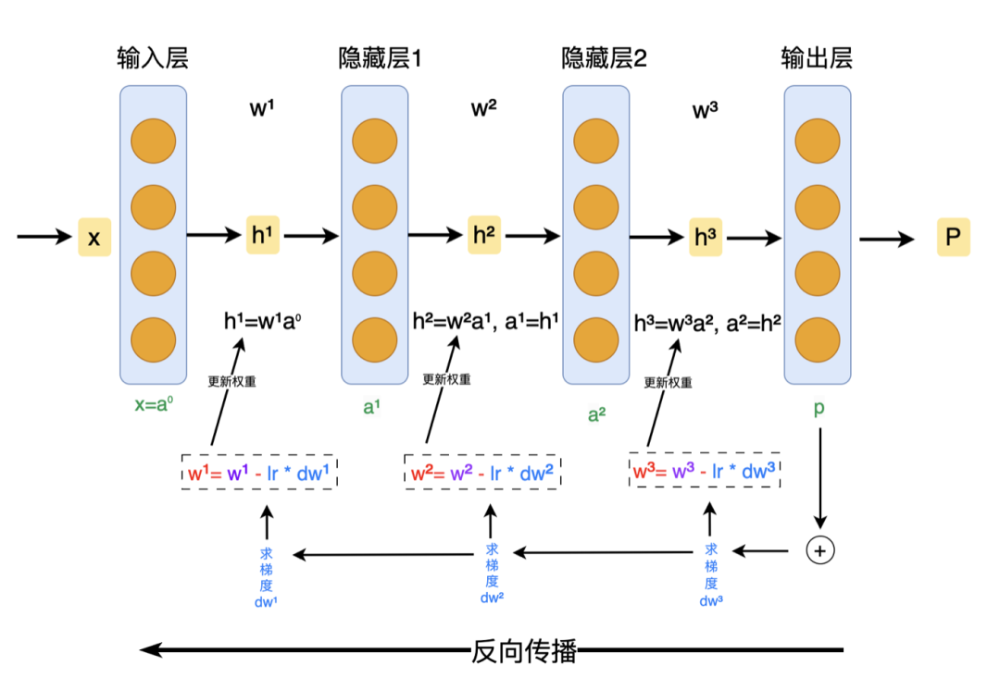
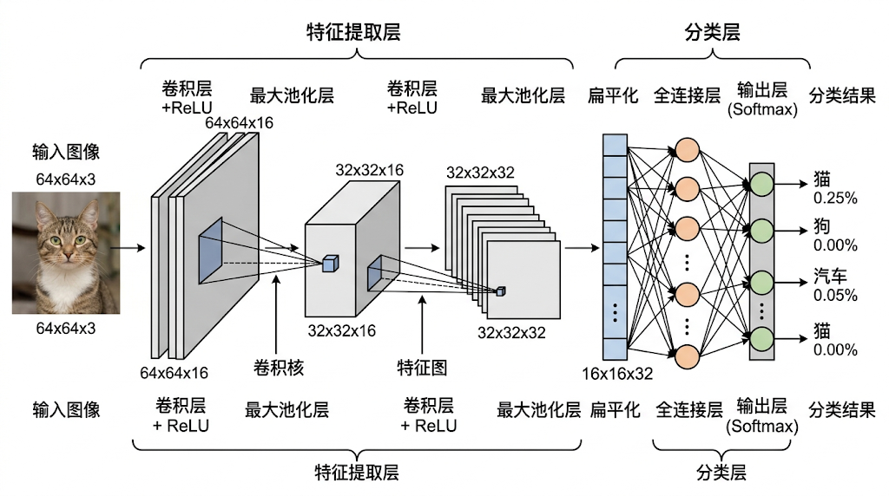
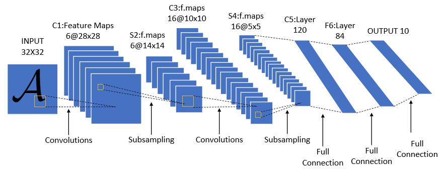
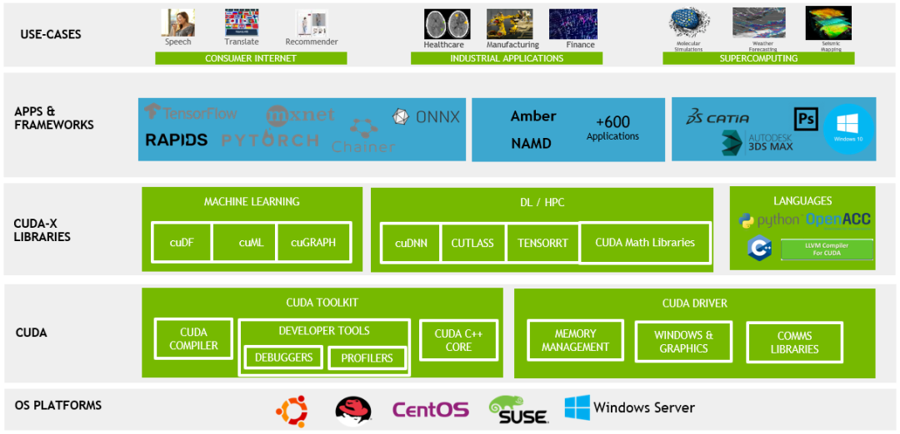
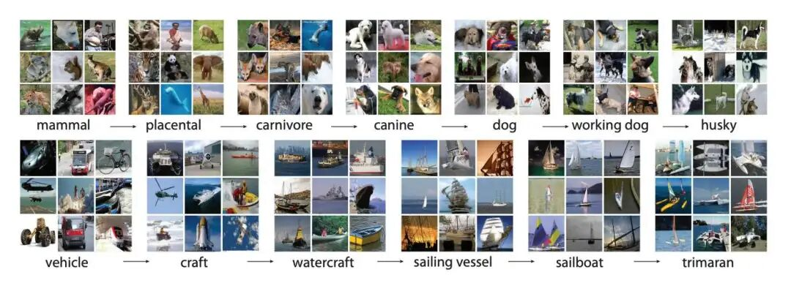
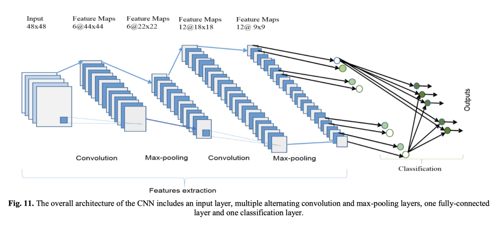

通过深度网络的非线性堆叠，机器能够学习到超越人类设计的特征表达。—AlexNet作者Geoffrey Hinton
1958年的波士顿，哈佛医学院地下实验室的日光灯管发出嗡嗡的嗡鸣。两位年轻的神经科学家——33岁的大卫·休伯尔（David Hubel）和34岁的托斯坦·威泽尔（Torsten Wiesel）——正盯着眼前被麻醉的猫。他们的白大褂上沾着咖啡渍，眼底泛着熬夜的血丝。这已经是他们连续第47天重复着相同的操作：撑开猫的眼皮，用幻灯机投射光点，再将微电极刺入猫脑的视觉皮层，试图捕捉神经元放电的“噼啪”声。
“又是死寂。”大卫摘下耳机，揉着太阳穴。过去几个月里，他们尝试过光斑、闪烁、甚至《花花公子》杂志上的性感女郎，但耳机里除了电流噪声，始终没有出现期待中的神经元“机关枪扫射”般的信号。托斯坦盯着投影仪卡槽里歪斜的幻灯片，突然伸手一拔——“噼里啪啦！！”
刺耳的爆鸣声从示波器传来，两人触电般跳起来。示波器上跃动的曲线，竟比他们听过的任何交响乐更震撼——那只猫脑中的神经元，正对幻灯片边缘漏出的一条模糊光带疯狂放电。
这个意外让两人彻夜未眠。他们发现：当光带以特定角度划过猫的视网膜时，某些神经元会像精准的密码锁般被激活。水平光带唤醒一组细胞，垂直光带则激活另一组，甚至45度倾斜的光条也有专属的“守卫者”。更惊人的是，这些神经元像分工明确的流水线工人：简单细胞只对特定位置、角度的静止光带起反应，如同拿着标尺的质检员；复杂细胞接收多个侦察兵的信息，能识别运动方向，即使光带位置偏移也无所谓。
托斯坦在实验笔记上画下层级结构图时，手指微微颤抖——这分明是大脑解码视觉的“金字塔”：从视网膜的像素点，到边缘线条，再到运动轨迹，最终在意识中拼合成“一只老鼠窜过墙角”的动态画面。
为了验证猜想，两人把自己反锁在实验室。当托斯坦将光带旋转到37度角时，示波器突然沉寂；调整到38度，神经元再次咆哮。大卫突然抓起量角器：“每5度就有一组专属神经元！”他们像测绘师般绘制出猫脑中的“角度地图”，直到第九个小时，地下室传来激动的尖叫——整个视觉皮层犹如精密排列的蜂巢，每个六边形“晶胞”覆盖视野的一小块区域，内部神经元负责不同角度的光带识别。
这一刻，他们窥见了造物主的设计图：大脑并非被动接收图像，而是通过层层抽象化处理，将视网膜上的光点炼成“意义”。这个发现不仅改写了神经科学教科书，更在40年后点燃了人工智能的革命——杨立昆（Yann LeCun）受此启发，设计出模仿视觉层级的卷积神经网络，让计算机第一次真正“看懂”世界。
可以说没有神经网络，就没有深度学习，更没有今天百花齐放的大模型，让我们回顾一下深度学习的发展历程，从而一窥深度学习强大的奥秘。
1940年代，人类对大脑工作机制的理解始终停留在“神经元要么放电、要么不放电”的简单逻辑层面，没法解释大脑怎么完成思考、识别这类复杂行为。这时McCulloch和Pitts试图用数学模型回答一个根本问题：“能不能用一个个简单的逻辑单元，模仿神经元组成系统，实现复杂智能？”
McCulloch与Pitts在论文《A Logical Calculus of the Ideas Immanent in Nervous Activity》中提出首个神经元数学模型（M-P模型），用“是/否”的二进制逻辑，模拟大脑神经元被激活、不激活的状态。这个模型证明神经网络能实现“而且、或者、不是”这类基础逻辑判断，打下了人工神经网络的理论底子。

但是这两位科学家的M-P模型只能模拟神经元“要么全开、要么全关”的特性，没法灵活调整神经元之间的连接强度（专业里叫权重，通俗说就是信号传递的强弱），只能处理简单的、能直线分开的问题，比如AND/OR逻辑，对稍微绕一点的异或（XOR）这类复杂问题就完全没办法。
要想突破这一困境，需要先通过搭建模仿逻辑电路的神经元网络，证明神经网络理论上具备计算能力，再引导后续研究重点攻克两个难题：一是让模型自己调整连接强度（也就是学习能力），二是加入能处理复杂问题的非线性激活函数（比如Sigmoid，通俗说就是让模型不只会简单判断，还能处理复杂关系）。
在M-P模型提出后，1958年心理学家Frank Rosenblatt基于该模型发明了“感知机”，第一次实现了简单的图形分类任务（比如识别黑白图像里的圆形、方形），一下子掀起了学界研究神经网络的小热潮。但好景不长，感知机本身的结构缺陷慢慢暴露，成了制约发展的关键短板。
单层感知机仅能处理线性可分问题，无法应对非线性场景；且缺乏多层网络的特征抽象能力，无法处理复杂数据（如手写字符、自然图像）。
1969年，人工智能先驱Marvin Minsky与Seymour Papert在著作《Perceptrons》中，通过严格的数学证明指出了感知机的根本性局限——明确证明“单层感知机解决不了异或问题”，还悲观地认为“就算把感知机改一改、加层数，也很难突破这个难题”。
再加上当时电脑算力特别有限，只能做简单的线性计算，这个结论直接让神经网络研究陷入了长达十余年的“冰河期”：科研经费变少、研究人员转行，这个领域几乎没了进展。

但这一低潮期也并非毫无价值：Minsky的批判让学界彻底想明白，想要突破复杂问题，核心是“多层网络结构+高效的训练算法”，为后来反向传播算法的诞生和深层网络的研究埋下了伏笔。
20世纪70年代末，随着电脑硬件初步升级（内存从KB级别升到MB级别），加上生物视觉研究有了新突破（也就是Hubel和Wiesel发现的大脑视觉皮层分层处理画面的机制），神经网络研究慢慢回暖。
当时传统的图像识别方法，要么是靠模板硬匹配，要么是人工手动提取特征，面临两个致命问题：一是图像稍微平移、放大、旋转一点，就识别不出来，通用性极差；二是全连接网络处理图像时，需要的参数多到爆炸，比如一张100×100像素的图片，输入全连接层就要一万个参数，计算量太大、成本太高。
大家都在思考：怎么设计一种既能模仿大脑视觉工作方式，又能高效处理图像、减少多余参数的网络结构？
靠人工手动设计图像边缘、角点这类特征，费时费力还不通用；全连接网络所有节点都互相连接，没法抓住图像局部的关键关联，效率太低。
日本科学家福岛邦彦受Hubel-Wiesel“大脑视觉皮层先简单识别、再复杂判断”的分层理论启发，提出了Neocognitron（神经认知机）模型，第一次把“模仿大脑视觉”和“自动学特征”结合起来，核心创新有三点：
神经认知机的提出，就是后来卷积神经网络（CNN）的雏形，它的“局部连接+权值共享+池化”核心设计，直接定下了后续CNN的基本结构。但受限于1980年代的硬件水平（当时电脑内存只有几十MB，运算速度极慢），这个模型没法处理大规模图像数据，训练一次要好几周，没法实际用。
另外，模型靠无监督学习，没法直接用于有标准答案的分类任务，还需要更高效的有监督训练方法来突破——这个需求也直接推动了反向传播算法的研发。
值得一提的是，福岛邦彦在神经认知机里用了硬阈值激活函数（输入超过一定数值就输出1，没超过就输出0），第一次实现了“只有部分神经元工作”，而且正区间梯度不会消失，避开了传统Sigmoid函数的梯度饱和问题（通俗说就是深层网络训练时，信号不会越传越弱），成了后来ReLU激活函数的早期原型。
神经认知机的结构创新证明了“多层网络可高效处理图像数据”，但缺乏高效的有监督训练方法，无法将其用于实际分类任务；同时，Minsky在《Perceptrons》中对“多层网络训练难度”的批判仍萦绕在学界，如何将误差信号从输出层反向传递至输入层，实现权重的自动调整，成为当时的核心难题。
1986年，Geoffrey Hinton、David Rumelhart和Ronald Williams团队在《Learning representations by back-propagating errors》一文中，首次将微积分中的链式法则工程化，提出了反向传播（BP）算法，其核心逻辑包括：

1989年，Yann LeCun敏锐发现BP算法和神经认知机结构完全适配，把二者结合——用BP算法替代神经认知机的无监督学习，实现了卷积网络的有监督训练，既解决了全连接网络参数太多的问题，还第一次实现了“端到端训练”，简单说就是喂进去原始数据，直接出最终结果，全程不用人工插手）。这一结合直接推动了后续LeNet模型的研发，成为CNN从理论走向实际应用的关键转折点。
BP算法与卷积结构的结合证明了其在图像处理中的有效性，但学界仍面临一个关键问题：卷积操作是否仅适用于图像数据？对于语音、医学影像等时空数据（具有时序或空间局部相关性），能否通过卷积结构解决全连接网络的参数爆炸问题？

BP算法与卷积结构的结合，证明了这套方法处理图像特别好用，但学界还有一个关键疑问：卷积操作只能用来处理图像吗？像语音、医学影像这类有时序或空间关联的数据，能不能用卷积结构解决全连接网络参数太多的难题？
全连接网络处理语音（时序数据）、医学影像（空间数据）时，抓不住局部的关键关联，参数多到浪费；不同类型的数据还要专门设计不同的网络，通用性太差。
大家想解决的是怎么把卷积操作从二维图像，拓展到一维语音这类时序数据里，同时保留“局部连接+权值共享”的优势；怎么证明卷积结构能适配多种不同类型的数据任务。
TDNN（时间延迟神经网络，1987）：由Alex Waibel团队提出，第一次把卷积操作用到语音识别任务里。核心是用一维卷积小窗口，顺着语音信号滑动，捕捉前后音素的关联，权值共享让参数数量比全连接网络少90%以上，训练速度大幅提升。TDNN的成功证明，卷积操作不光能处理图像，处理语音这类时序数据也好用，为后来的语音识别深度学习模型打下了基础。
SIANN（空间不变人工神经网络，1988）：由Ernst Lehnert团队提出，专门针对X光片这类医学影像设计，用二维卷积小窗口提取骨骼边缘、肿瘤轮廓这类局部纹理特征，搭配池化层，让模型对图像平移、缩放更不敏感。这个模型在肺部X光片异常检测中，准确率比传统方法高20%以上，证明卷积结构在医疗影像这类专业领域也能用。
这两项研究第一次证明，卷积结构适配多种数据——不管是一维语音，还是二维图像，“局部连接+权值共享”都能解决参数太多的问题，抓住数据内在的关键关联。但局限在于，这两个模型都是专门为单一任务设计的，没有统一的框架；也没有标准化的训练流程，模型换个场景就不一定好用，这些不足直接推动了后续LeNet模型对卷积网络架构的标准化整合。
经过1980年代的结构创新（神经认知机）、训练突破（BP算法）和跨模态验证（TDNN/SIANN），卷积网络的核心要素已基本完备。但当时工业界的字符识别任务（如美国邮政的支票手写数字识别）仍依赖人工规则（如笔画分析）和传统算法（如SVM），泛化能力差（不同人笔迹差异大）、错误率高（约5%），亟需一种端到端的自动化解决方案。
人工规则和传统算法无法覆盖复杂的书写变体，对噪声敏感；现有卷积模型缺乏标准化架构，难以实现工业级部署。
如何整合“卷积+池化+全连接”的层级结构，设计出兼顾精度与效率的标准化网络；如何在有限的算力和数据条件下，实现模型的稳定训练与实用化。
Yann LeCun团队在整合此前技术成果的基础上，推出了LeNet-5模型，确立了现代CNN的基础架构，核心设计包括：

LeNet-5在美国邮政的支票手写数字识别任务中，错误率降到0.8%，远低于传统方法的5%，成为第一个真正落地实用的深度学习模型，证明了CNN能用到工业场景里。但受限于1998年的硬件水平（当时的奔腾二代CPU算力极低，内存只有64MB），模型训练一次要好几周；同时，当时的MNIST数据集只有6万张训练图片，数据量有限，模型没法做太复杂，只能做5层网络，处理不了彩色照片这类复杂自然图像。
尽管存在局限，LeNet-5的意义在于：首次确立了CNN的标准化架构（卷积→池化→全连接），证明了“端到端学习”的工业价值，为后续深度学习的爆发积累了工程经验。而其面临的“算力不足”和“数据匮乏”两大瓶颈，也直接推动了后续GPU算力革命和大规模数据集的构建。
LeNet-5的成功证明了CNN的实用价值，但CPU的串行计算架构成为制约深层网络发展的核心瓶颈。随着网络层数增加（如从5层扩展到8层以上），卷积、全连接等操作涉及的大规模矩阵乘法（如AlexNet的卷积层需1.5亿次浮点运算/图像）在CPU上效率极低——训练一个8层网络需耗时数月，完全无法满足科研和工业需求。
CPU串行计算架构无法适配CNN的大规模并行计算需求，算力不足导致深层网络训练难以实现。
传统CPU核心数少（仅4-8核），并行度低；缺乏面向深度学习的高效编程模型，无法充分利用GPU的计算资源。
2006年，NVIDIA推出CUDA（Compute Unified Device Architecture）架构，首次将GPU从“图形渲染工具”转化为“通用并行计算平台”，其核心突破包括：

CUDA架构的诞生彻底打破了深度学习的算力瓶颈，使大规模深层网络训练成为可能。例如，后续的AlexNet模型（8层）在CPU上训练需数月，而在双GPU（GTX 580）上仅需5天，效率提升10倍以上。此外，GPU算力的普及推动了更多研究者参与深层网络探索，催生了一系列算法创新（如ReLU、Dropout），为2012年深度学习革命的爆发奠定了硬件基础。
随着GPU算力的提升，深层网络的训练效率大幅提高，但另一个核心瓶颈逐渐凸显：缺乏大规模、多样化的标注数据集。当时主流的图像数据集（如MNIST、Caltech-101）规模小（仅万级样本）、类别少（仅百类），导致模型易过拟合，无法验证深层网络的特征提取潜力；同时，传统手工特征提取方法在小数据集上表现尚可，但面对复杂自然图像时泛化能力差，亟需大规模数据集来倒逼算法革新。
小数据集无法支撑深层网络训练，缺乏统一的大规模图像分类评测标准，导致算法进步缓慢已成为这一时期的核心矛盾。
人工标注大规模图像成本极高（单张图像标注需耗时数分钟）；缺乏规范的标签体系，难以保证数据质量。
2009年，李飞飞团队通过“技术+众包”结合的方式，构建了ImageNet数据集，核心设计包括：
（1）规模化规模：包含1400万张标注图像，覆盖2万+语义类别（从动物、植物到日常用品），规模较传统数据集提升100倍以上；
（2）层级化标签：基于WordNet语义网络设计标签体系（如“狗→哈士奇→成年哈士奇”），规范分类任务的语义边界；
（3）众包标注：通过全球众包平台招募标注员，搭配质量审核机制，只用2年就完成标注，成本大幅降低；
（4）统一评测：发起ImageNet挑战赛，用“Top-5错误率”（相当于给模型一张图，列出5个可能答案，看正确答案有没有在里面）作为统一标准，方便对比不同算法的好坏。

ImageNet的发布彻底改变了计算机视觉的研究范式：传统手工特征方法在ImageNet上的Top-5错误率超25%，暴露了其局限性；而深层网络通过自动特征学习，展现出更强的泛化能力。此外，ImageNet挑战赛成为算法创新的“催化剂”，吸引了全球研究者参与，直接推动了AlexNet、VGG、ResNet等一系列经典模型的诞生，使深度学习从实验室走向产业界。
2012年之前，尽管CNN的架构（LeNet）、算力（CUDA）和数据（ImageNet）基础已具备，但深层网络训练仍面临三大核心难题：梯度消失导致训练不稳定、全连接层参数冗余易过拟合、单GPU显存无法承载大规模模型。这些问题导致当时的深层网络（如8层）在ImageNet上的性能未能超越传统方法，深度学习尚未形成主流范式。
深层网络训练不稳定（梯度消失/爆炸）、泛化能力差（过拟合）、硬件适配不足（单GPU显存有限），无法充分发挥算力和数据的优势。
如何设计高效的激活函数解决梯度消失；如何通过正则化方法抑制过拟合；如何优化模型架构适配GPU并行计算。
Alex Krizhevsky团队在2012年ImageNet挑战赛中推出AlexNet模型，通过“算法+硬件”的协同创新，彻底解决了上述难题，核心革新包括：
（1）ReLU激活函数：替代传统Sigmoid，深层训练时信号不会变弱，彻底解决深层网络训练信号消失的问题；同时只有一半左右的神经元工作，计算效率更高、特征提取更精准——这个设计其实继承了神经认知机的阈值函数思路，通过实验证明了实用性；
（2）Dropout正则化：训练时随机关掉一半神经元，强迫模型学更通用的特征，不会只依赖个别神经元，避免死记硬背；测试时把所有神经元打开，综合多个模型的效果，让错误率再降3%以上；
（3）双GPU并行训练：将模型拆分为两部分，分别部署在两块GTX 580 GPU（3GB显存）上，通过梯度同步机制实现跨GPU通信，突破单卡显存限制，训练效率提升2倍；
（4）局部响应归一化（LRN）：模仿大脑视觉的侧抑制机制，让不同神经元各司其职，提取的特征更有针对性，模型通用性更强；
（5）数据增强：通过图片翻转、裁剪、调整颜色，人为扩充训练数据，进一步避免模型死记硬背。

AlexNet在2012年ImageNet挑战赛中，以Top-5错误率15.3%的成绩夺冠，远超第二名传统方法的26%，震惊了整个学界。这个结果直接证明了深度学习在计算机视觉任务里的绝对优势，瞬间引爆了全球深度学习研究热潮，标志着人工智能正式进入“深度学习时代”。
从技术衔接来看，AlexNet的成功是此前所有技术积累的必然结果：ReLU激活函数继承了神经认知机的阈值函数思想，卷积架构延续了LeNet的标准流程，GPU同步训练靠CUDA的算力支撑，ImageNet数据集则给模型提供了充足的学习素材。算法、算力、数据三者完美配合，彻底打破了发展瓶颈，推动深度学习从理论走向大规模应用，也为后来大语言模型（LLM）、强化学习等领域的发展，定下了核心范式。
纵观深度学习的诞生之路，从生物大脑的视觉奥秘被揭开，到人工神经网络一步步突破局限、迭代升级，再到算力与数据的双重加持，AI正是站在一代代科研前辈的成果之上，才一步步拥有了看懂世界、理解数据的能力。这也正是深度学习最珍贵的内核：站在巨人的肩膀上，让智能不断突破边界。